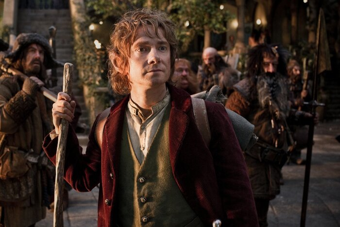

Интересные факты о фильме "Хоббит"
1. История: в «Хоббите», события которого происходят за 60 лет до «Властелина колец», рассказывается о невинном мохнатоногом Бильбо Бэггинсе. Вместе с бандой неуправляемых гномов и волшебником Гэндальфом он отправляется в поход, чтобы сразить злого дракона. По пути он также обменивается загадками в темноте со странным созданием, известным как Голлум, и подбирает одну побрякушку, несущую неприятности…
2. Несмотря на то, что Питер Джексон казался самым подходящим кандидатом на режиссера экранизации «Хоббита», первоначально он не хотел подписываться на такой огромный проект, уже отдав многие годы своей жизни экранизации Толкина.
3. У Джексона была еще одна проблема: персонажи. «Тринадцать гномов – одна из причин, по которым «Хоббит» приводил меня в ужас, и из-за чего я был уверен, что не возьмусь», – заметил он, хотя, когда съемки были на подходе, он передумал. «Ирония в том, что это оказалось одной из радостей фильма!»
4. После «Властелина колец» Джексон был вынужден подать в суд на кинокомпанию New Line, чтобы получить свою долю прибыли, что, очевидно, немного затруднило его работу над «Хоббитом». Однако, как он сказал Entertainment Weekly в 2006 году, ««Хоббит» не вовлечен в судебный процесс. Быльбо Бэггинс не работает на бухгалтерский отдел New Line, и я, конечно, но виню его за наши раздоры».

5. В результате за съемки взялась кинокомпания MGM, и в апреле 2008 года режиссером фильма был нанят Гильермо дель Торо, а Джексон остался продюсером. Мексиканский режиссер хорошо знал Джексона после работы над их совместной экранизацией «Halo», теперь уже заброшенной.
6. В фильме куча гномов. Это (глубокий вдох…) Торин, Двалин, Балин, Кили, Фили, Дори, Нори, Ори, Оин, Глоин, Бифур, Бофур и Бомбур.
7. Дель Торо едва ли был большим фанатом Толкина перед тем, как он получил работу, и ему пришлось лихорадочно читать о Средиземье, чтобы понять, отчего вся эта суматоха.
8. В дополнение к знаменитым иллюстраторам Толкина Джону Хоу и Алану Ли дель Торо нанял художниками-постановщиками создателей комиксов Майка Миньолу и Уэйна Барлоу.
9. Некоторые элементы «Хоббита» были уже созданы для «Властелина колец», однако, это облегчило работу.
Также декорации можно было использовать повторно. «Мы держали в хранилище миниатюры Ривенделла», – говорил Джексон, – «и декорации дома Бильбо тоже были сохранены».
10. Более того, большая версия декорации Бэг-Энда оказалась во владении Джексона, и режиссер использовал ее как домик для гостей. Также, как известно, он развлекал там таймлордов.
наверх